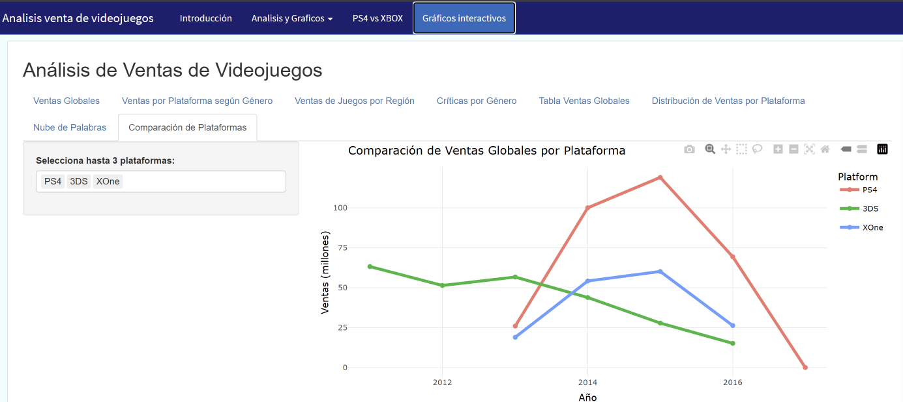

Análisis de ventas de videojuegos
Análisis de ventas de videojuegos mediante R, estudiando su distribución por plataformas, géneros y regiones. Incluye visualizaciones comparativas y el desarrollo de un dashboard interactivo para explorar los datos.
R
Shiny
Flexdashboard
ggplot2
Plotly